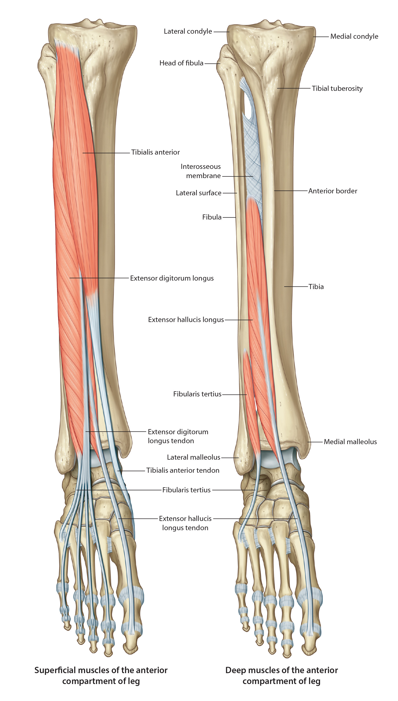

Lab 8 - Module 2 - Anatomy of the Anterior and Lateral Compartments: Page 2 of 3
×

Muscles of the Anterior Compartment
|  |
| Tap on image to enlarge |
| Anterior compartment is located anterior to the interosseous membrane between the lateral surface of the tibia and anterior crural intermuscular septum. It contains the dorsiflexors of the ankle and extensors of the toes. |
| Add the Extensor Hallucis Longus muscle. |
|
Origin - Medial surface of the fibula; anterior part of the interosseous membrane Insertion - Dorsal surface of the base of the distal phalanx of the great toe (Hallux) Innervation - Deep Fibular (peroneal) Nerve Action - Extends the great toe, assists in foot inversion, dorsiflexes the ankle |
| Add the Extensor Digitorum Longus muscle. |
|
Origin - Lateral condyle of the tibia, superior 3/4ths of the medial surface of the fibula and interosseous membrane Insertion - Middle and distal phalanges of the four lateral toes Innervation - Deep Fibular (peroneal) Nerve Action - Extends the lateral four toes, helps dorsiflex the ankle |
| Add the Anterior Tibialis Muscle. |
|
Origin - Lateral condyle and lateral surface of the proximal ½ of the tibia and interosseous membrane Insertion - Medial and plantar surface of the first metatarsal and medial cuneiform bone Innervation - Deep Fibular (peroneal) Nerve Action - Dorsiflexes ankle and inverts the foot |